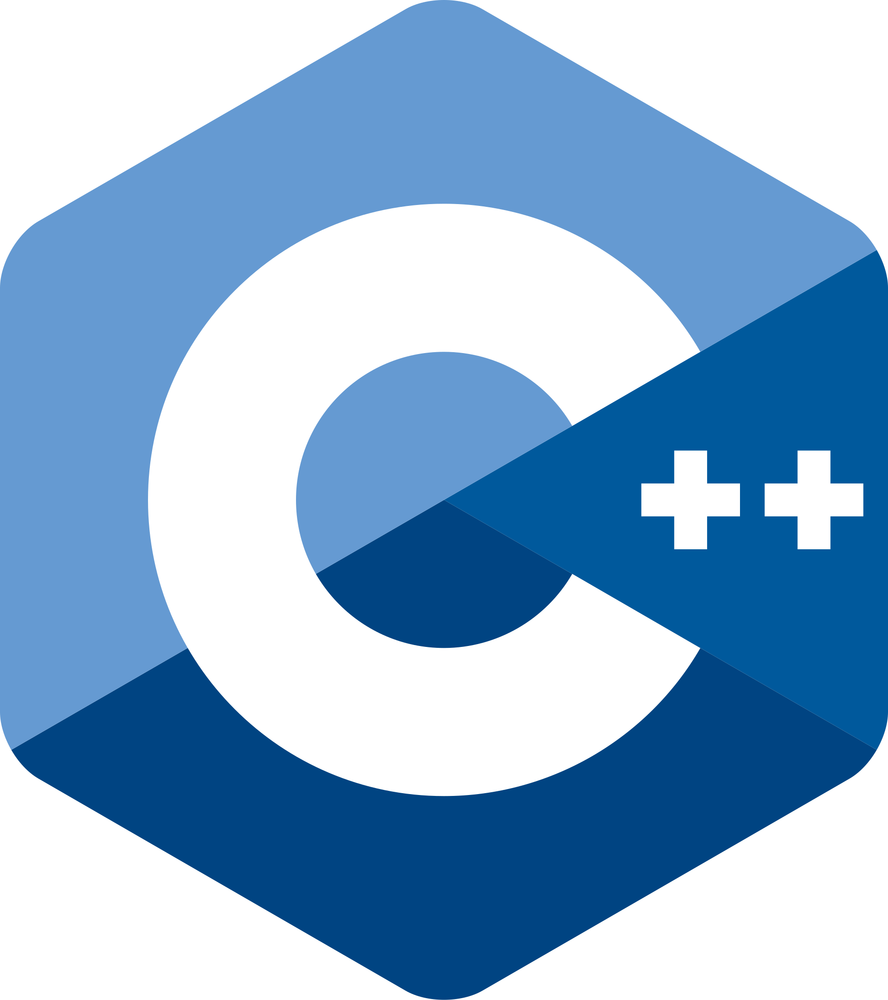
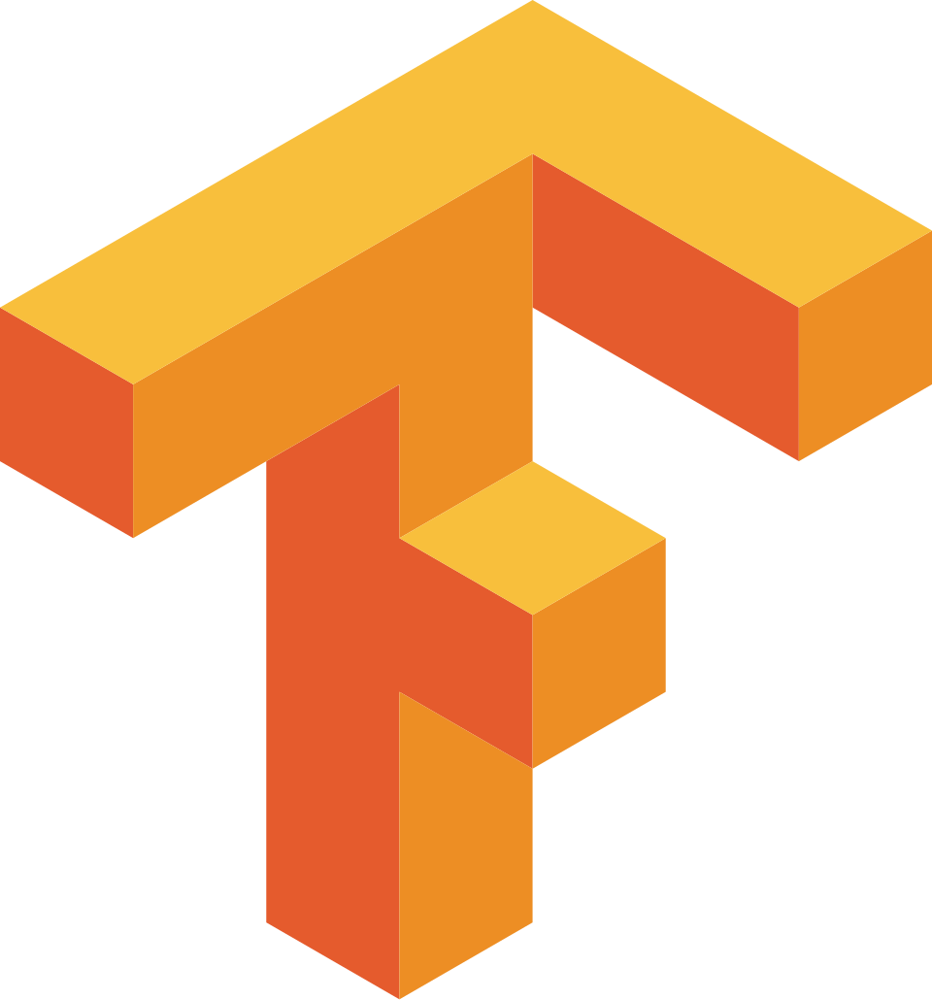
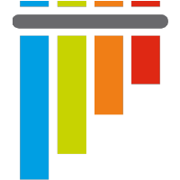
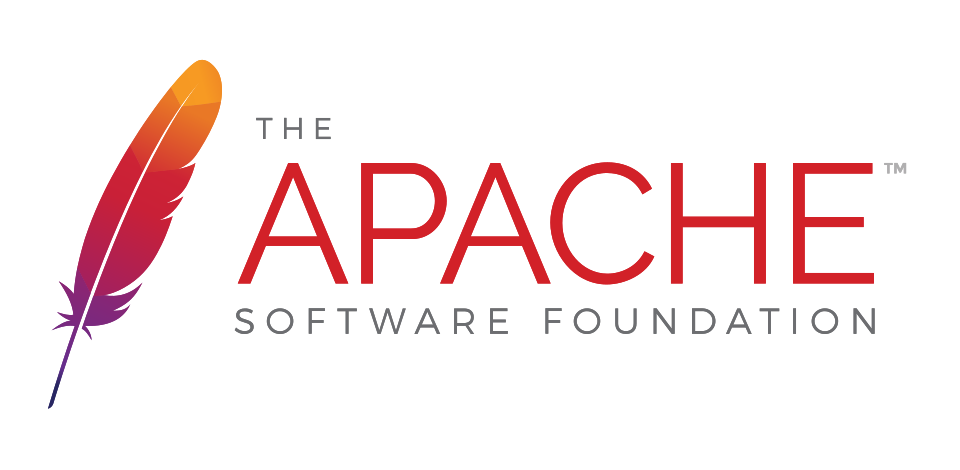
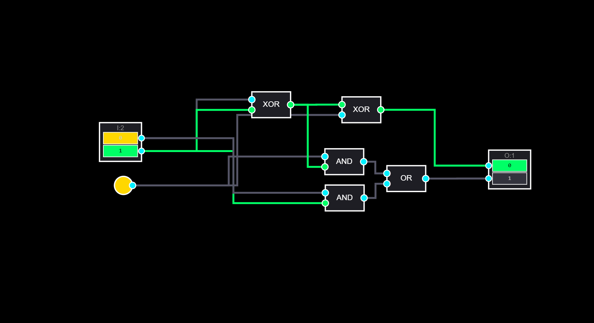
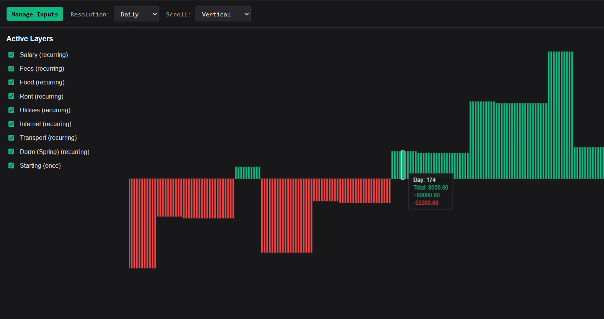
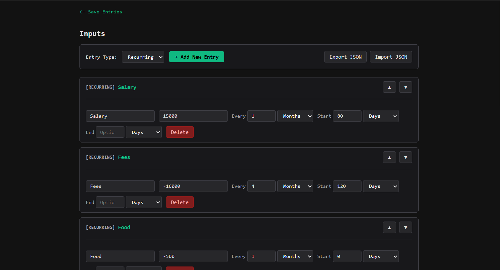
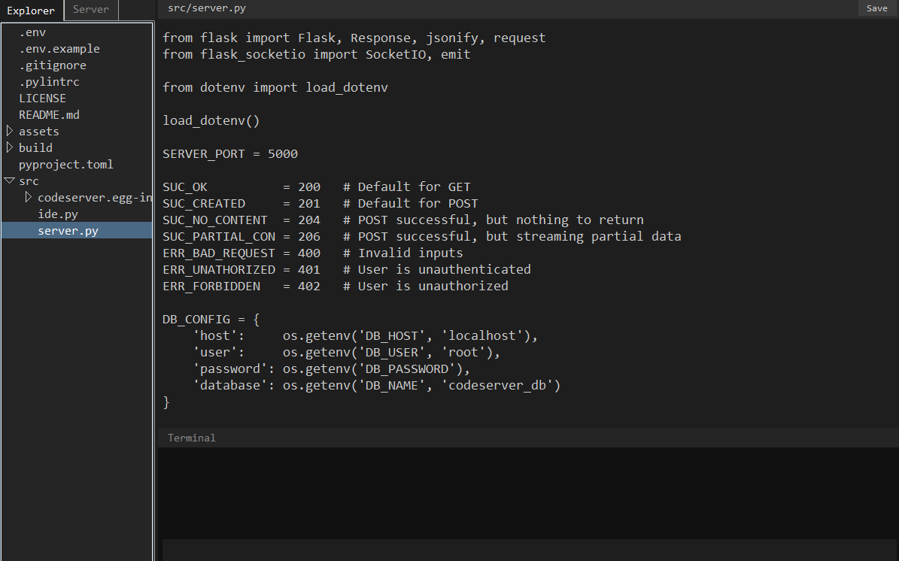

Faris Muhammad • فَارِس مُحَمَّد
Hi! I'm a (My age is supposed to be dynamically inserted here) year old programmer, currently in Bangalore, India, though I was previously situated in Sharjah, UAE and Muscat, Oman. I started programming in Python since I was 9, hence the highly ambitious portfolio and array of projects.

C++
TensorFlow Electron Pylint
Pytest Cloudflare TailscaleSite Navigation
Use the [+] / [-] buttons at the top to increment or decrement the 8-bit value respectively, which represents the current page number. The 8-bit full adder circuit was designed in raw JavaScript using an HTML canvas, hence why it looks like that. You can also toggle the bits (left-click) to navigate pages (assuming you know binary).
Farix OS
My 64-bit x86/ARM kernel built using C and Assembly. The full repository is on GitHub as well as my computer. The core kernel is nothing but a memory manager, and the aim is to keep every driver as a literal 'file' on the hard disk.
Unlike other Unix operating systems, necessary drivers are loaded dynamically onto memory. This is also the microkernel philosophy, but it is my goal to try to make it run on kernel level, so it can keep the speed of a monolithic kernel.
FXTools
The build process was initially done using a standard GNU Makefile, but this grew weary over me (tabs only is annoying). Hence, the build process is entirely managed by a Python CLI "library" called 'FXTools'. It's basically a standardised function router.
Every command in FXTools is really a file with a 'run' function that takes the necessary arguments. When you run the main FXTools program, it finds your file, imports the function, and executes it. The modularity helps maintain it easier.
LogicGates

Apache 2.0A small, vanilla, browser Logic Gate simulator, fit with I/O nodes, buses, and styled for learners. The entire thing is purely frontend, and, hence, always available on a browser, though the full repository can be found on GitHub.

This is a full-adder circuit designed inside LogicGates. Perhaps the above image and the rest of this site clash on the theme, that is because this portfolio was designed using repurposed code from LogicGates.
Of course, the code was modified for this site: the blocks and nodes cannot be moved, you cannot zoom in/out, you cannot rewire the circuit (it would break this site, probably), and some stylistic changes were made as well.
Features
- Logic Gates: Obviously, the program allows the creation and deletion of all 6 gates, namely: AND, OR, NOT, NOR, NAND, and XOR.
- Clean Wires: The wires properly twist and bend as you drag it from the input to output nodes.
- I/O: You can connect wires to input and output nodes that create or display the current inflow value.
Controls
'N' to create a new element and 'D' to toggle delete mode.
LedgerMap
Planning out finances for a future after secondary education is a pain, considering I've been in school for as long as I can remember. I built LedgerMap to take in input values for these expenses and give out a graph where I can see the trend of the money inflow and outflow.

The program generates these graphs without any libraries. To get the UI to be exactly as I wanted it, a canvas was used to manually draw rectangles of the required dimensions.
Inputs
The program lets the user input in how their money moves. These inputs may be a positive value, which indicates inflow of money (e.g. salary), or negative, which indicates outflow (e.g. payments). The inputs may only occur once at a given date, or it may be recurring every so period of time, or it might be like an intrest. All these types of inflows and outflows are graphed by LedgerMap.

Detrace
A CLI tool designed specially for cryptanalysis as an entropy reduction engine. Using a Machine Learning model, created using TensorFlow, it identifies the likelihood of each cipher algorithm, provided the cipher text. It then attempts to decrypt the text, iteratively running through the predictions. The program is also capable of decrypting ciphers with multiple layers to it.
Detrace was designed with the goal that it be as advanced of a cryptanalysis tool as I can make it. The entropy reduction part is secondary, and tags along as the system evolves.
Detrace verifies if its output is correct by checking each word against a dictionary of valid words provided. If the result is past the threshold, the program assumes it to be valid plaintext. Multiple commands are available as part of the CLI for different types of operations.
CodeServer.py
Created for my final secondary education school submission, it is a remote development environment. It uses Tailscale to connect a "server" computer to the internet with APIs made using Flask. "Client" computers can then use the Tkinter IDE to connect to the server and access it as if it were on the client's computer.

Server Security
A sandbox environment is created for every client terminal, so that the actual server cannot be affected by it. Furthermore, an ignore file is supported that the server can use to hide certain files from being available to the clients.
Memory Address 0x00
ERROR : Unallocated memory address.